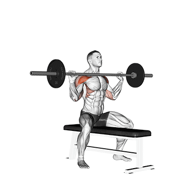

Stoječi potisk čez glavo, znan tudi kot potisk izza glave ali vojaški potisk, je vaja z utežmi, pri kateri oseba potiska utež navpično nad glavo, medtem ko stoji ali sedi. Potisk čez glavo predvsem cilja na mišice deltoidov ramen, skupaj s tricepsom in različnimi mišicami za stabilizacijo. Gre za kompleksno gibanje, ki pomaga pri razvoju moči in stabilnosti zgornjega dela telesa.
Oseba, ki izvaja vajo, stoji pokonci z nogami na širini ramen in drži uteži na ravni ramen z dlanmi obrnjenimi naprej. Nato iztegne roke navzgor, pri čemer poravna komolce, in dvigne uteži nad glavo, dokler niso roke skoraj popolnoma iztegnjene. Počasi spusti uteži nazaj v začetni položaj. To je ena ponovitev (ponovitev). Ponavljajte gibe brez prekinitev.
Trajanje: minut
Kalorije: kcal
Vrsta:
Težavnost:
Kratek opis: